- 관련게시물 : 대한민국, 수출 1조 달러 클럽 가입...JPG
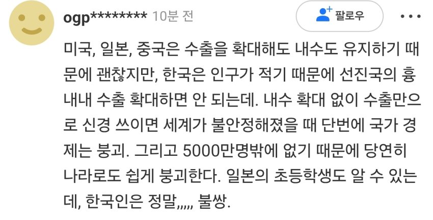
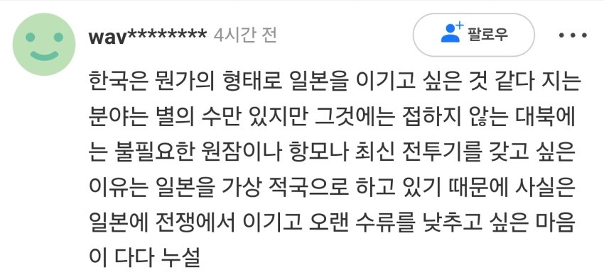
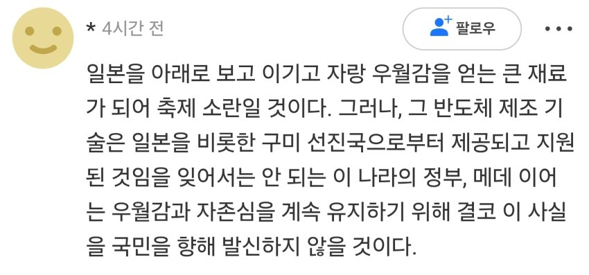
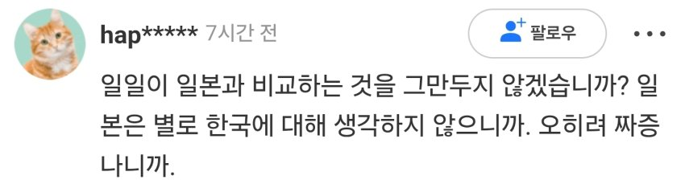
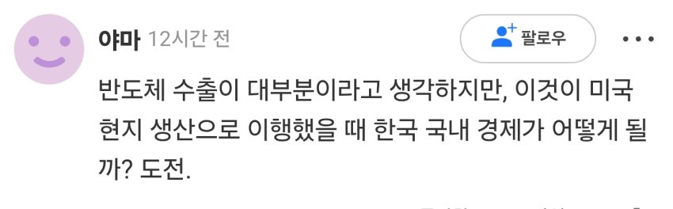
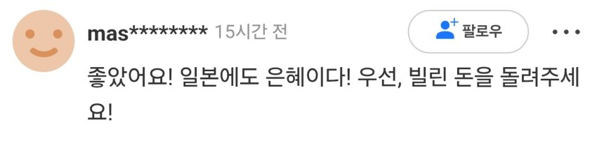
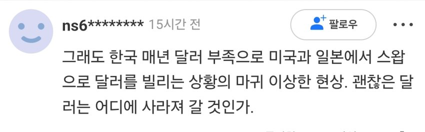
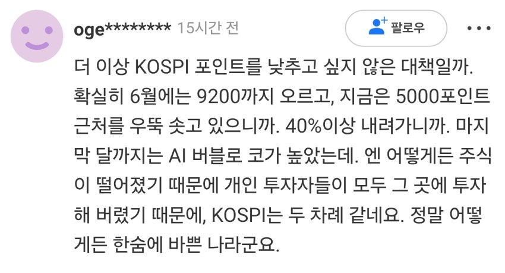
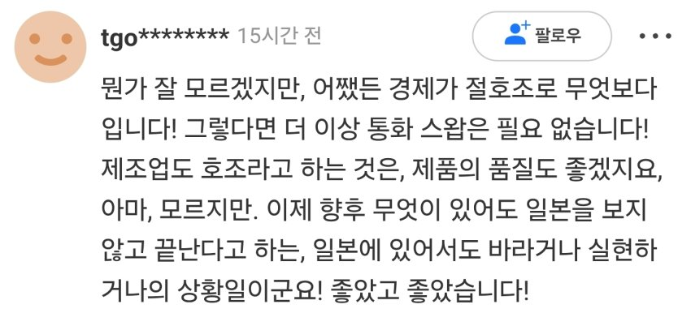
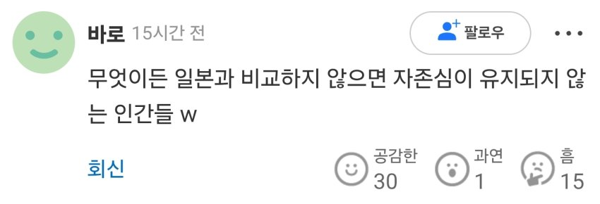
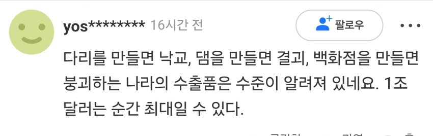
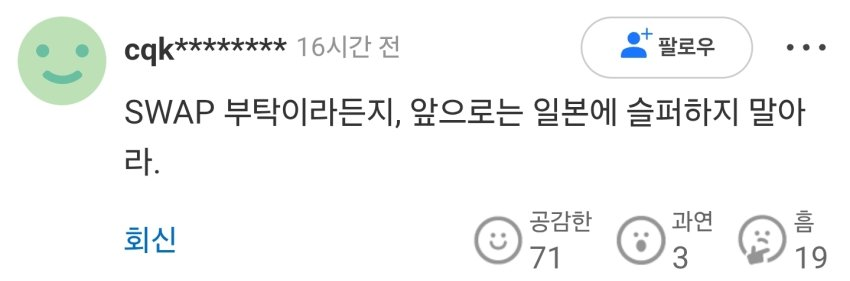
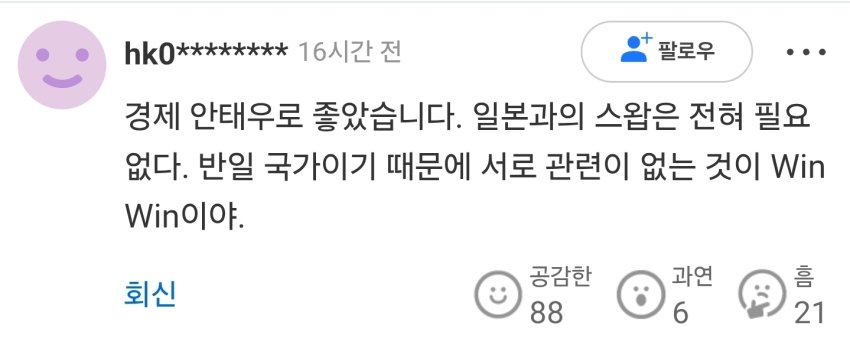
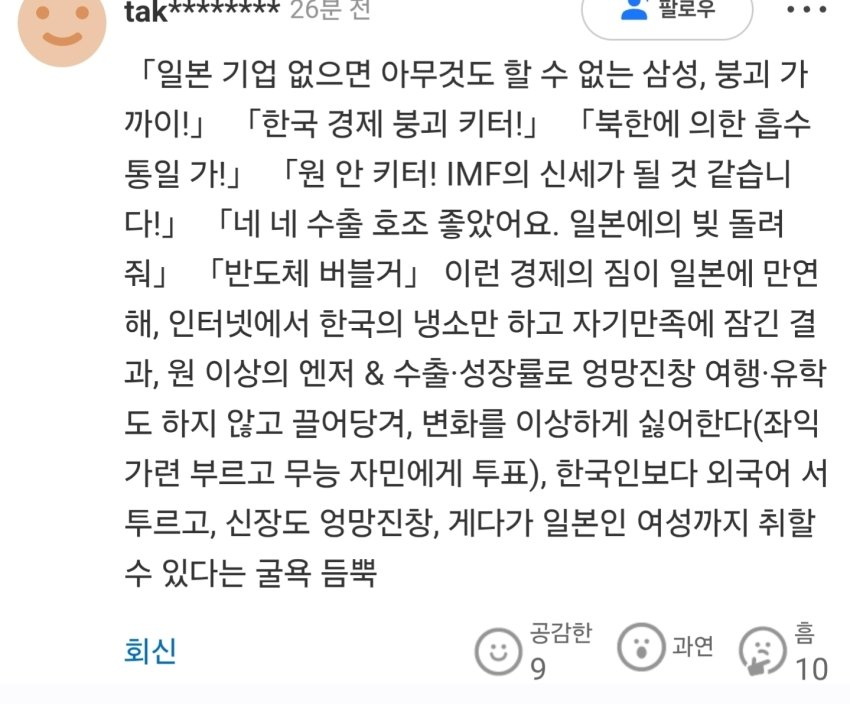
- 관련게시물 : 대한민국, 수출 1조 달러 클럽 가입...JPG














댓글
수집 당시 댓글 34개
ㅇㅇ · 11.20 10:31:12
대갤러1 · 11.20 10:47:13
ㅇㅇ · 11.20 10:47:20
ㅇㅇ · 11.20 11:20:46
대갤러2 · 11.20 15:39:42
3dd · 11.20 19:50:49
かなたん · 11.20 19:51:09
· 말랑보추 · 11.20 19:52:44
봇치쟝 · 11.20 19:51:17
ㅇㅇ · 11.20 19:51:20
ㅇㅇ · 11.20 19:51:27
· ㅇㅇ · 11.20 19:51:38
· ㅇㅇ · 11.20 19:51:54
ㅇㅇ · 11.20 19:52:06
ㅇㅇ · 11.20 19:52:08
· ㅇㅇ · 11.20 19:52:13
· ㅇㅇ · 11.20 19:52:18
· ㅇㅇ · 11.20 19:53:01
말랑보추 · 11.20 19:52:09
· 샨테 · 11.20 19:53:19
· かなたん · 11.20 19:53:51
ㅇㅇ · 11.20 19:52:13
ㅇㅇ · 11.20 19:52:16
샨테 · 11.20 19:52:21
· 말랑보추 · 11.20 19:53:04
· 샨테 · 11.20 19:53:08
ㅇㅇ · 11.20 19:53:07
스마라딘 · 11.20 19:53:10
ㅇㅇ · 11.20 19:53:21
2456778 · 11.20 19:53:36
DC전사쿠루미쨩 · 11.20 19:53:44
ㅇㅇ · 11.20 19:53:56
ㅇㅇ · 11.20 19:53:56
ㅇㅇ · 11.20 19:54:04
한국의위인
이재명 손
흥민 백종
원 문재인